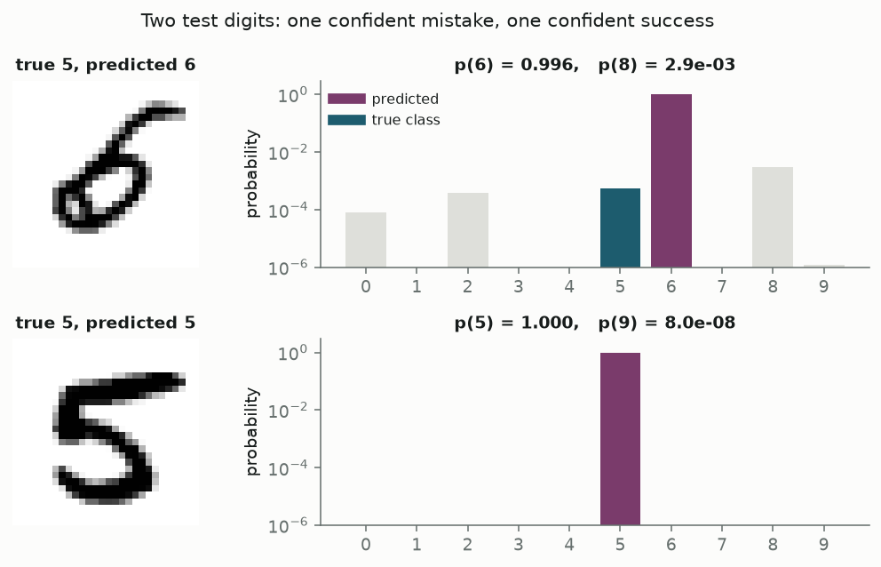

1 Localization framing
Explainability methods assign credit to parts of an input for a model output. The operative question: which parts were responsible, and how much?
Three design axes:
- Part — pixel, patch, convolution channel, table column, PCA direction.
- Responsibility — local gradient, deletion damage, axiom-based attribution, variance share, intervention effect.
- Uncertainty — almost never in ML attribution; standard in classical statistics.
This post implements four methods on a misclassified MNIST digit (Part I) and four on Fisher’s irises (Part II).
1.1 Running example (MNIST)
Test digit 9729: true class 5, predicted 6 with probability 0.996. Correct-class probability 0.00055 ranks third, behind 6 and an 8.
Build-time checks
Prose values interpolate from the same objects as the figures. 14 cross-checks run at render time — integrated-gradients completeness, Grad-CAM equivalence, logistic SEs vs statsmodels, ANOVA vs scipy, PCA vs scikit-learn. Render fails on any mismatch.
Rank correlations in sanity-check and agreement sections are read from figures, not interpolated.
- [wrong] integrated gradients sum to f(x) - f(0) within 3.7e-04 relative
- [wrong] Grad-CAM via hooks is bit-identical to Grad-CAM via the head split
- [wrong] Grad-CAM equals CAM / 49 to 8.9e-08 absolute
- [wrong] all 617 baseline-valued pixels receive exactly zero from IG
- [right] integrated gradients sum to f(x) - f(0) within 2.1e-04 relative
- [right] Grad-CAM via hooks is bit-identical to Grad-CAM via the head split
- [right] Grad-CAM equals CAM / 49 to 1.8e-07 absolute
- [right] all 562 baseline-valued pixels receive exactly zero from IG
- [wrong] the largest saliency value in the map (1.35) is on a baseline-valued pixel
- logistic coefficients match statsmodels to 8.9e-16, standard errors to 2.7e-15
- ANOVA F statistics match scipy.stats.f_oneway to 2.7e-15 relative
- PCA explained-variance ratios match scikit-learn to 2.2e-16
- setosa is linearly separable from the rest; versicolor and virginica are not
- permutation importances agree with scikit-learn’s within Monte-Carlo error (largest gap 0.0066, largest 3-sigma bound 0.0138)
2 Two traditions
| Tradition | Model size | Typical parts | Uncertainty |
|---|---|---|---|
| Statistics | Small (legible parameters) | Variables, variance sources | Standard errors, F tests |
| Machine learning | Large (black box) | Pixels, channels, patches | Point estimates only |
- Statistics: regression coefficients, ANOVA decomposition, PCA loadings — attributions with intervals.
- Machine learning: saliency, Grad-CAM, integrated gradients, occlusion — per-part numbers without intervals.
Part I: black box (MNIST). Part II: glass box (Iris).
3 Part I — MNIST attribution
3.1 MNIST data
Source: LeCun, Cortes and Burges MNIST database, rebuilt from NIST Special Database 3 (Census Bureau employees) and SD-1 (high-school students). Size-normalised 20×20 glyphs centred in 28×28 fields; grey anti-aliased pixels.
- Objective: classify digit from image; label = human-intended digit.
- Downstream impact: misread digits on cheques or mail routing (recoverable; suitable for explanation study).
- Why attribution: 784 correlated inputs; no readable coefficients; model is differentiable and cheap to evaluate.
3.2 Model architecture
Small CNN: two conv blocks → 7×7 grid → 128-channel conv → global average pooling → linear layer (10 logits). Global average pooling collapses spatial structure; final layer sees channel strengths only. Architecture chosen so Grad-CAM remains valid (see below).
def features(self, x: torch.Tensor) -> torch.Tensor:
return self.act3(self.bn3(self.conv3(self.block2(self.block1(x)))))
def head(self, a: torch.Tensor) -> torch.Tensor:
return self.fc(a.mean(dim=(2, 3)))Four epochs on CPU, fixed seed. Test accuracy 98.8% (125 errors in 10,000). Running examples: most confidently wrong digit and most confidently correct digit of the same true class (both fives).
Misclassified digit: lower stroke forms a closed loop (six-like feature).
3.3 Saliency
Definition: \(|\nabla_x f|\) — magnitude of gradient of target logit w.r.t. each pixel. One backward pass. Simonyan, Vedaldi and Zisserman (2014).
def saliency(model: SmallCNN, x01: torch.Tensor, target: int) -> np.ndarray:
x = _as_batch(x01).requires_grad_(True)
model.zero_grad(set_to_none=True)
model(normalise(x))[0, target].backward()
return x.grad[0, 0].detach().numpy()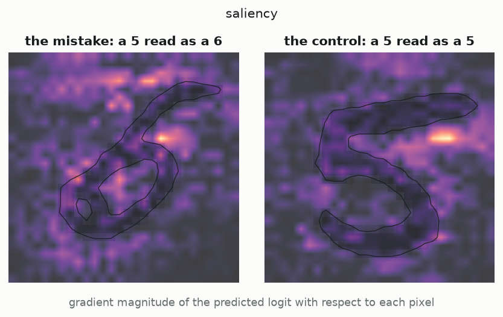
Observations:
- Speckled map; ReLU piecewise linearity causes neighbouring pixels to differ sharply in derivative.
- Of 617 black pixels, 617 receive non-zero gradient; max 1.35 on empty pixel.
- Measures sensitivity to hypothetical perturbation, not contribution to current output.
3.4 Occlusion
Definition: slide 7×7 black patch; record logit drop. Real finite perturbation. Zeiler and Fergus (2014).
def occlusion(
model: SmallCNN,
x01: torch.Tensor,
target: int,
patch: int = 7,
fill: float = 0.0,
) -> np.ndarray:
base = target_logit(model, x01, target)
half = patch // 2
img = _as_batch(x01)
batch, centres = [], []
for r in range(28):
for c in range(28):
occluded = img.clone()
occluded[
:, :, max(0, r - half) : r + half + 1, max(0, c - half) : c + half + 1
] = fill
batch.append(occluded)
centres.append((r, c))
with torch.no_grad():
logits = model(normalise(torch.cat(batch)))[:, target].numpy()
out = np.zeros((28, 28), dtype=np.float64)
for (r, c), value in zip(centres, logits):
out[r, c] = base - value
return out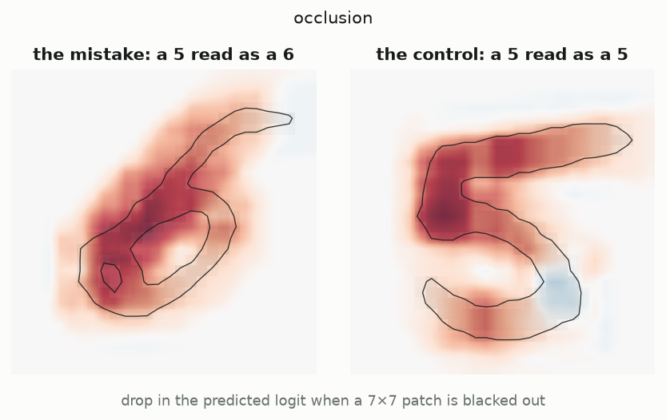
On misclassified digit: mass on closed lower loop; max logit drop 8.4 for class 6.
Limitation: occluding already-black regions does nothing. 319 pixels sit in fully black 7×7 neighbourhoods; max occlusion change 4.8e-06 vs saliency up to 0.82. Different definitions of absent.
3.5 Grad-CAM
Definition: weight final-convolution channels by mean gradient of target logit across each 7×7 map; sum; keep positive part. Parts = 128 channels, not pixels. Selvaraju et al. (2017).
def grad_cam(model: SmallCNN, x01: torch.Tensor, target: int) -> np.ndarray:
activations = model.features(normalise(_as_batch(x01))) # (1, 128, 7, 7)
activations.retain_grad()
model.zero_grad(set_to_none=True)
model.head(activations)[0, target].backward()
weights = activations.grad[0].mean(dim=(1, 2)) # (128,) channel weights
cam = torch.relu((weights[:, None, None] * activations[0]).sum(0)) # (7, 7)
return _upsample(cam.detach().numpy())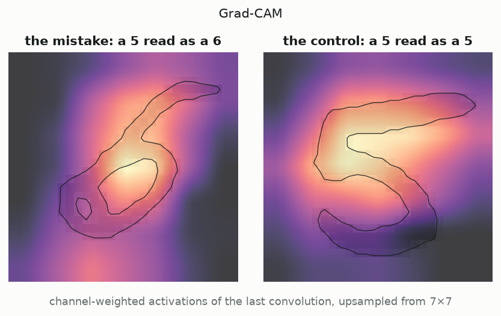
Properties:
- Smooth blob on loop; native 7×7 grid → ~4×4 pixel resolution on MNIST.
- Requires global-average-pooling head (flatten head can zero entire map).
- With GAP head, collapses to CAM; build asserts: Grad-CAM equals CAM / 49 to 8.9e-08 absolute.
3.6 Integrated gradients
Definition: path integral of gradient from baseline to input; satisfies completeness (attributions sum to output difference). Sundararajan et al. (2017).
def integrated_gradients(
model: SmallCNN,
x01: torch.Tensor,
target: int,
baseline: torch.Tensor | None = None,
steps: int = 512,
) -> np.ndarray:
x = _as_batch(x01)
base = torch.zeros_like(x) if baseline is None else _as_batch(baseline)
# Midpoint rule: unbiased for the linear part and far more accurate than
# left endpoints at the same cost, which matters because completeness is
# checked numerically rather than assumed.
alphas = (torch.arange(steps, dtype=torch.float32) + 0.5) / steps
path = base + alphas.reshape(-1, 1, 1, 1) * (x - base)
path.requires_grad_(True)
model.zero_grad(set_to_none=True)
model(normalise(path))[:, target].sum().backward()
avg_grad = path.grad.mean(0, keepdim=True)
return ((x - base) * avg_grad)[0, 0].detach().numpy()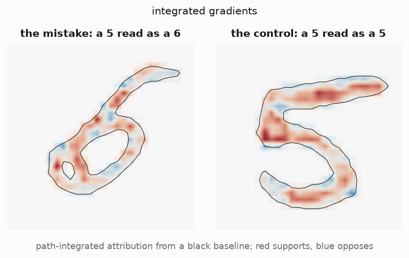
- Sum 10.632 vs logit difference 10.636.
- Positive evidence 17.1; negative 6.5 (top bar = five-like stroke).
3.6.1 Baseline dependence
Attribution = \((x - x') \times\) averaged gradient. Where \(x = x'\), attribution is exactly zero — all 617 black pixels are zero by construction, not empirically. Baseline defines “absent”; completeness holds relative to that choice.
3.6.2 Sanity check (random weights)
Adebayo et al. (2018): recompute on untrained weights; map should change if method reads the model.
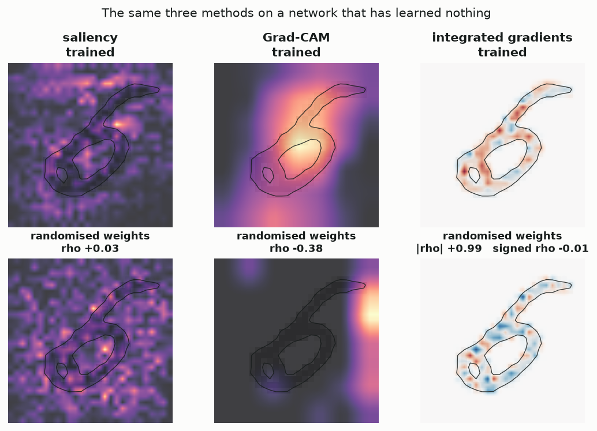
- Saliency: rank correlation \(+0.03\) (passes).
- Grad-CAM: \(-0.38\) (passes).
- Integrated gradients magnitudes: \(+0.99\) (fails); signs: \(-0.01\). Factor \((x - x')\) dominates magnitude; any network produces stroke-shaped map.
3.7 Method agreement
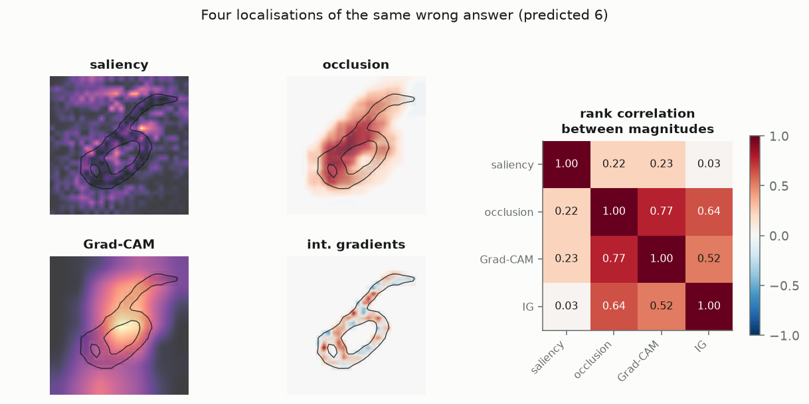
| Pair | Correlation | Interpretation |
|---|---|---|
| Occlusion ↔︎ Grad-CAM | +0.77 | Both coarse, region-based; agree on loop |
| Integrated gradients ↔︎ Occlusion | +0.64 | Same stroke, finer distribution; signed negative evidence |
| Saliency ↔︎ others | +0.03 to +0.23 | Different quantity (sensitivity vs contribution) |
None of the four attach uncertainty intervals.
4 Part II — Iris attribution
4.1 Iris data
Source: Edgar Anderson’s 1930s measurements from Gaspé Peninsula, Quebec; used by Fisher (1936). 150 flowers, 4 measurements (cm), 3 species.
- I. setosa and I. versicolor: same pasture, same day, same apparatus (Anderson, via Fisher).
- I. virginica: different colony (Fisher notes different collection conditions).
- Objective: taxonomic classification from four measurements.
- Downstream impact: misclassified herbarium specimen (research, not clinical).
- Why intervals: \(n=50\) per species; petal length ↔︎ petal width correlation 0.963 prevents clean separation of contributions.
4.2 Logistic coefficients
Versicolor vs virginica; unpenalised logistic regression on standardised features; Newton–Raphson. Covariance = inverse of \(X^\top W X\) at maximum; Wald intervals = estimate ± 2 SE.
def fit_logistic(
X: np.ndarray, y: np.ndarray, names: list[str], max_iter: int = 100, tol: float = 1e-10
) -> LogitFit:
Xd = np.column_stack([np.ones(len(X)), X])
beta = np.zeros(Xd.shape[1])
converged, used = False, max_iter
for step in range(max_iter):
eta = Xd @ beta
p = 1.0 / (1.0 + np.exp(-eta))
W = p * (1.0 - p)
# Ridge-free Newton step. pinv rather than solve: on separable data the
# information matrix goes singular, and we want the run to continue and
# report a diverging coefficient rather than raise.
hessian = Xd.T @ (W[:, None] * Xd)
score = Xd.T @ (y - p)
delta = np.linalg.pinv(hessian) @ score
beta = beta + delta
if np.max(np.abs(delta)) < tol:
converged, used = True, step + 1
break
eta = Xd @ beta
p = np.clip(1.0 / (1.0 + np.exp(-eta)), 1e-15, 1 - 1e-15)
W = p * (1.0 - p)
cov = np.linalg.pinv(Xd.T @ (W[:, None] * Xd))
loglik = float(np.sum(y * np.log(p) + (1 - y) * np.log(1 - p)))
return LogitFit(
beta=beta,
se=np.sqrt(np.diag(cov)),
cov=cov,
iterations=used,
converged=converged,
loglik=loglik,
names=["intercept"] + list(names),
)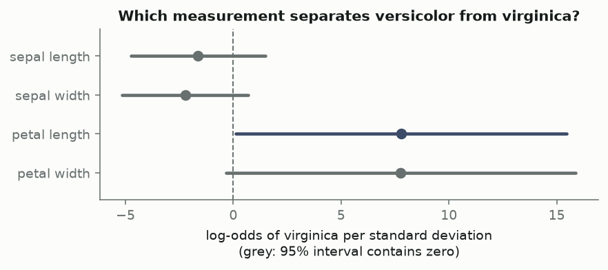
| term | coef | std err | z | p | 2.5% | 97.5% |
|---|---|---|---|---|---|---|
| sepal length | -1.634 | 1.587 | -1.030 | 0.303 | -4.745 | 1.476 |
| sepal width | -2.223 | 1.491 | -1.491 | 0.136 | -5.145 | 0.698 |
| petal length | 7.785 | 3.911 | 1.990 | 0.047 | 0.119 | 15.450 |
| petal width | 7.767 | 4.138 | 1.877 | 0.061 | -0.344 | 15.878 |
Key numbers:
- Petal length coef 7.78, petal width 7.77; SE ~ 4.0.
- Petal length \(p =\) 0.047; petal width \(p =\) 0.061 (interval crosses zero).
- Collinearity: individually unstable coefficients, jointly precise separation.
4.2.1 Complete separation
Setosa vs rest: unpenalised model has no finite maximum (hyperplane separates perfectly).
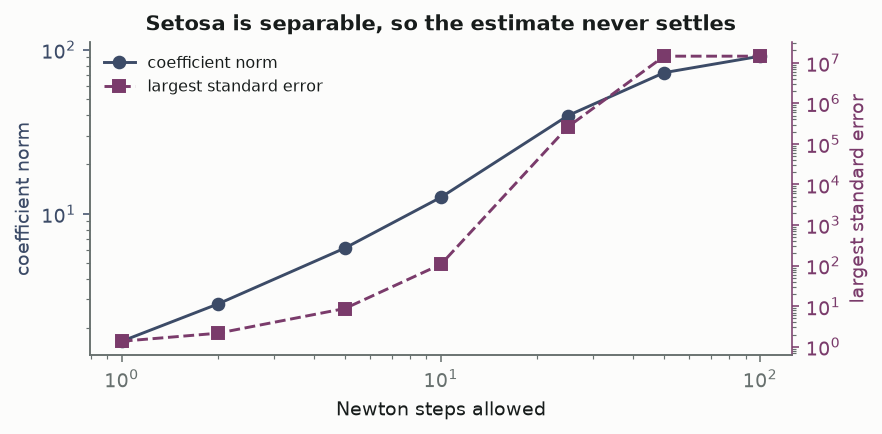
| newton steps | coefficient norm | largest std err | log-likelihood |
|---|---|---|---|
| 1 | 1.67 | 1.37 | -24.8 |
| 2 | 2.81 | 2.17 | -9.6 |
| 5 | 6.17 | 8.79 | -0.643 |
| 10 | 12.6 | 108 | -0.00623 |
| 25 | 39.8 | 2.64e+05 | -2.27e-09 |
| 50 | 72.7 | 1.45e+07 | -1.5e-13 |
| 100 | 91.6 | 1.45e+07 | -1.5e-13 |
Over 100 Newton steps: coefficient norm 1.67 → 92; largest SE 1.37 → 1.4e+07. scikit-learn default L2 regularisation masks this.
4.3 ANOVA
One-way ANOVA per measurement: total SS splits exactly into between-group and within-group components. \(\eta^2\) = between-group share = marginal attribution to species.
def anova_table(df: pd.DataFrame) -> pd.DataFrame:
rows = []
for feature in FEATURES:
groups = [df.loc[df.species == s, feature].to_numpy() for s in SPECIES]
values = np.concatenate(groups)
grand = values.mean()
ss_between = sum(len(g) * (g.mean() - grand) ** 2 for g in groups)
ss_within = sum(((g - g.mean()) ** 2).sum() for g in groups)
df_between = len(groups) - 1
df_within = len(values) - len(groups)
f = (ss_between / df_between) / (ss_within / df_within)
rows.append(
{
"feature": feature,
"F": f,
"df": f"{df_between}, {df_within}",
"p": float(stats.f.sf(f, df_between, df_within)),
"eta^2": ss_between / (ss_between + ss_within),
}
)
return pd.DataFrame(rows)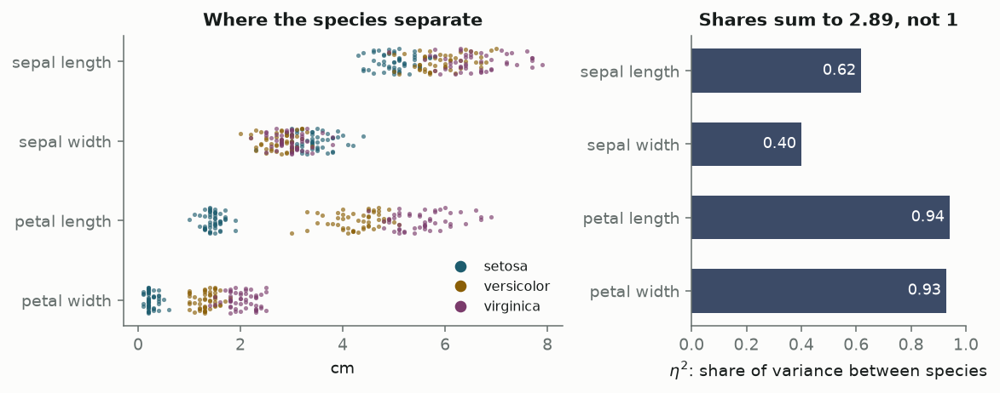
| feature | F | df | p | eta^2 |
|---|---|---|---|---|
| sepal length | 119.3 | 2, 147 | 1.67e-31 | 0.6187 |
| sepal width | 49.16 | 2, 147 | 4.492e-17 | 0.4008 |
| petal length | 1180 | 2, 147 | 2.857e-91 | 0.9414 |
| petal width | 960 | 2, 147 | 4.169e-85 | 0.9289 |
- Petal length \(\eta^2\) = 0.941 ({94.1%} of variance explained by species).
- Largest p-value among four: 4e-17.
4.3.1 Marginal vs conditional attribution
Separate one-way ANOVAs → \(\eta^2\) values sum to 2.89 (not shares of one quantity). Sepal length \(\eta^2\) = 0.62 partly from correlation 0.872 with petal length. Regression coefficients are conditional (others fixed); ANOVA \(\eta^2\) is marginal.
4.4 PCA
Parts = principal components (linear combinations maximising variance). Standardised vs raw scaling changes results.
def pca_fit(X: np.ndarray, standardised: bool = True, k: int = 2) -> PCAFit:
Z = standardise(X) if standardised else X - X.mean(0)
U, S, Vt = np.linalg.svd(Z, full_matrices=False)
var = S**2 / (len(Z) - 1)
# Sign convention: make each component's largest-magnitude loading positive,
# so the biplot does not flip between runs or between standardisations.
V = Vt.T
flip = np.sign(V[np.abs(V).argmax(0), np.arange(V.shape[1])])
V = V * flip
scores = Z @ V
return PCAFit(
ratio=var / var.sum(),
loadings=V[:, :k],
scores=scores[:, :k],
standardised=standardised,
)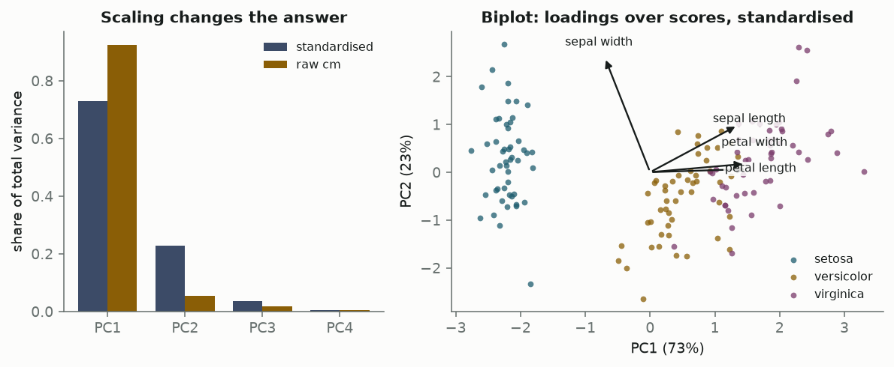
- Standardised: first two PCs carry 95.8% of variance.
- PC1 loadings: petal length 0.58, petal width 0.56, sepal length 0.52, sepal width -0.27.
- Raw centimetres: PC1 = 92.5% vs 73.0% standardised; petal length loading 0.86. Scale choice alters “explanation” (same issue as occlusion fill value).
4.5 Permutation importance
Shuffle one column on held-out set; measure accuracy drop. Occlusion analogue for tabular data.
def permutation_importance(
predict, X: np.ndarray, y: np.ndarray, repeats: int, rng: np.random.Generator
) -> pd.DataFrame:
baseline = float((predict(X) == y).mean())
rows = []
for j, name in enumerate(FEATURES):
drops = np.empty(repeats)
for r in range(repeats):
Xp = X.copy()
Xp[:, j] = Xp[rng.permutation(len(Xp)), j]
drops[r] = baseline - float((predict(Xp) == y).mean())
rows.append(
{
"feature": name,
"mean drop": drops.mean(),
"sd": drops.std(ddof=1),
"se": drops.std(ddof=1) / np.sqrt(repeats),
}
)
return pd.DataFrame(rows)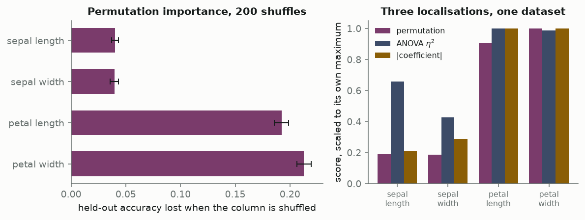
| feature | mean drop | sd | se |
|---|---|---|---|
| sepal length | 0.0402 | 0.0224 | 0.0016 |
| sepal width | 0.0395 | 0.0279 | 0.0020 |
| petal length | 0.1922 | 0.0468 | 0.0033 |
| petal width | 0.2127 | 0.0470 | 0.0033 |
- Test accuracy 95.0% on 60 flowers.
- Petal width drop 0.213; sepal width 0.039.
- Intervals from 200 shuffle repeats (Monte Carlo on permutation, not sampling SE on 150 rows).
5 Method comparison
| Method | Part | Responsible means | Uncertainty |
|---|---|---|---|
| Saliency | pixel | large local gradient | none |
| Occlusion | image patch | logit lost when blanked | none as computed |
| Grad-CAM | conv channel | active and gradient-weighted | none |
| Integrated gradients | pixel | path integral from baseline | none |
| Logistic coefficient | feature | log-odds per sd, others fixed | Wald interval |
| ANOVA \(\eta^2\) | feature | share of between-group variance | F test |
| PCA loading | direction | variance captured | none as computed |
| Permutation importance | feature | accuracy lost when shuffled | Monte-Carlo interval |
5.1 Correlational vs intervening methods
- Read-only: saliency, coefficients, PCA loadings — structure from fitted object.
- Intervening: occlusion, integrated gradients, permutation importance — construct inputs model never saw.
Interventions use impossible inputs (black patch, shuffled column). Mechanistic interpretability (activation patching) intervenes internally; still point estimates.
5.2 Uncertainty gap
Statistics attaches intervals; ML attribution scales to large models without them. Permutation importance shows one bridge (repeat perturbation, report spread). Occlusion maps could carry the same treatment at cost of many forward passes.
6 Reproducing this
Source: posts/explainability-localization/src/. Code blocks extracted via inspect.getsource at render. See README for environment and build checks.
7 References
- Adebayo, J. et al. (2018). Sanity Checks for Saliency Maps. NeurIPS.
- Anderson, E. (1935). The Irises of the Gaspé Peninsula. Bulletin of the American Iris Society, 59, 2–5.
- Fisher, R. A. (1936). The Use of Multiple Measurements in Taxonomic Problems. Annals of Eugenics, 7(2), 179–188.
- LeCun, Y., Cortes, C. and Burges, C. The MNIST Database of Handwritten Digits.
- Selvaraju, R. R. et al. (2017). Grad-CAM: Visual Explanations from Deep Networks via Gradient-based Localization. ICCV.
- Simonyan, K., Vedaldi, A. and Zisserman, A. (2014). Deep Inside Convolutional Networks: Visualising Image Classification Models and Saliency Maps. ICLR Workshop.
- Sundararajan, M., Taly, A. and Yan, Q. (2017). Axiomatic Attribution for Deep Networks. ICML.
- Zeiler, M. D. and Fergus, R. (2014). Visualizing and Understanding Convolutional Networks. ECCV.
- Zhou, B. et al. (2016). Learning Deep Features for Discriminative Localization. CVPR.